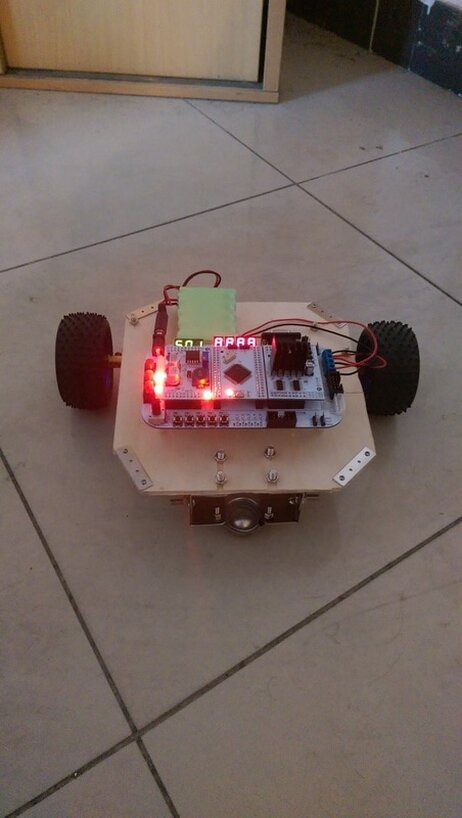
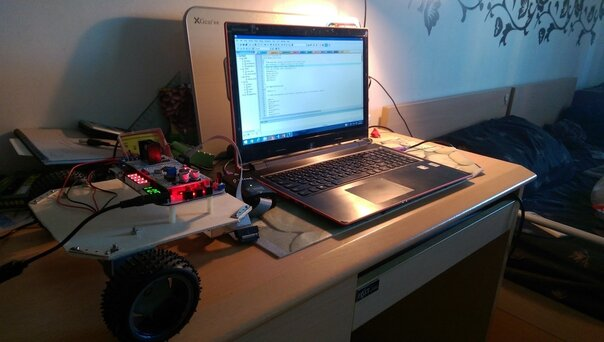
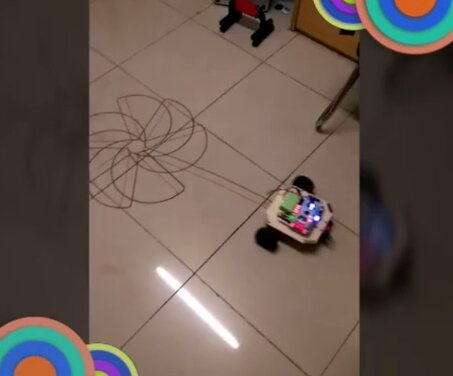

05 / ACADEMIC PROJECT
STM32 Pattern-drawer Robot
An undergraduate pattern-drawing robot built around an STM32 microcontroller.

PROJECT OVERVIEW
The idea and implementation.
I programmed the STM32-based robot in C++ using the Keil IDE. This project connects embedded programming with a physical mobile-robot platform.
The photographs document the robot and its electronics.
Project gallery

